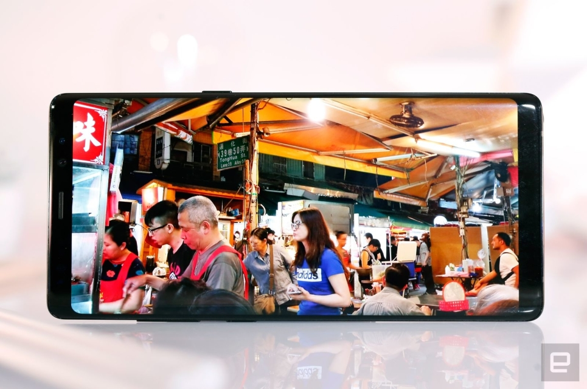
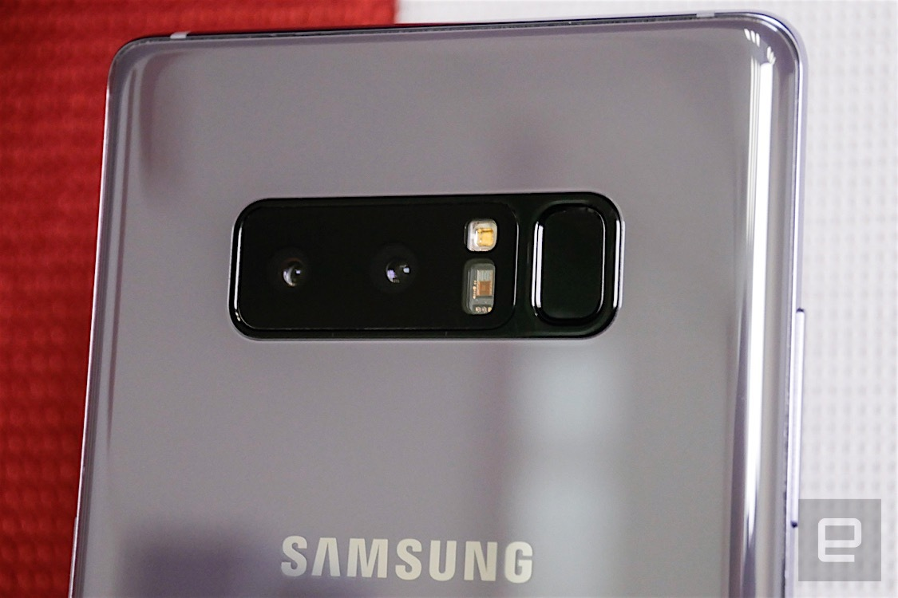
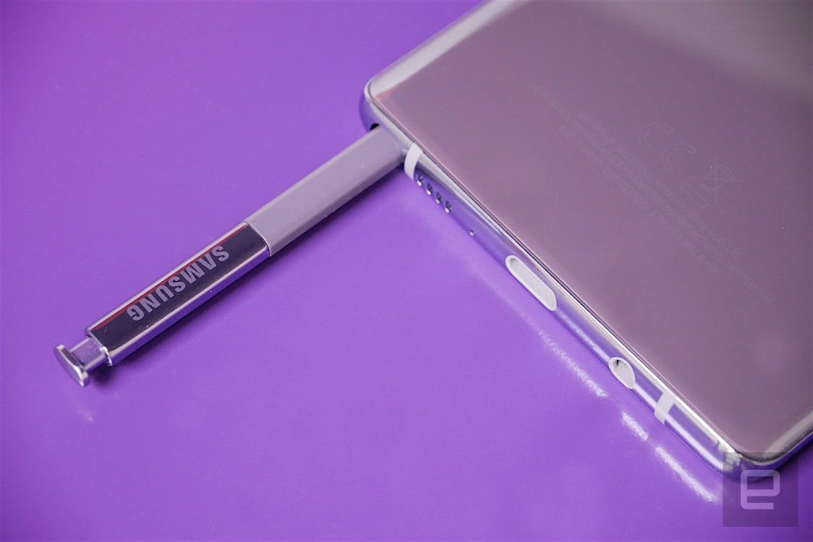
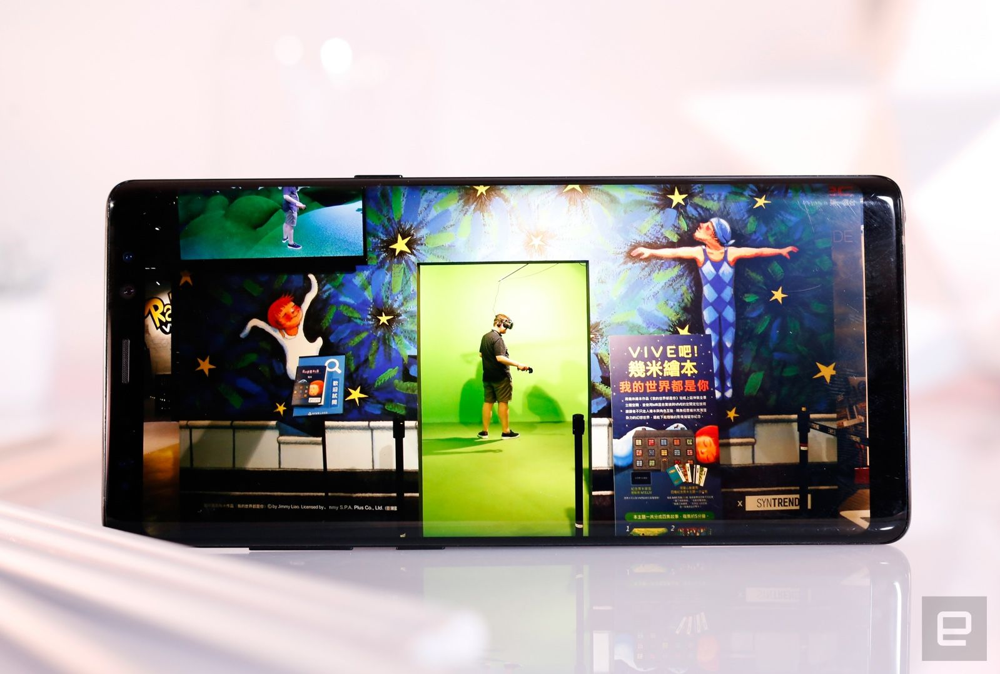
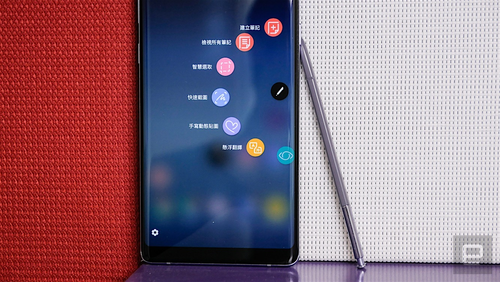
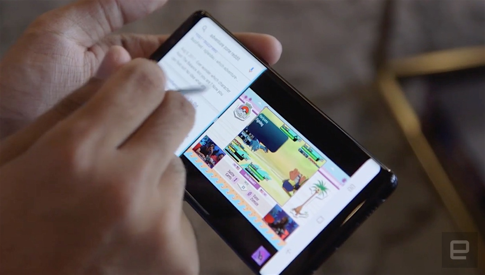
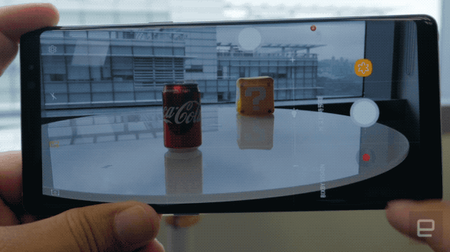
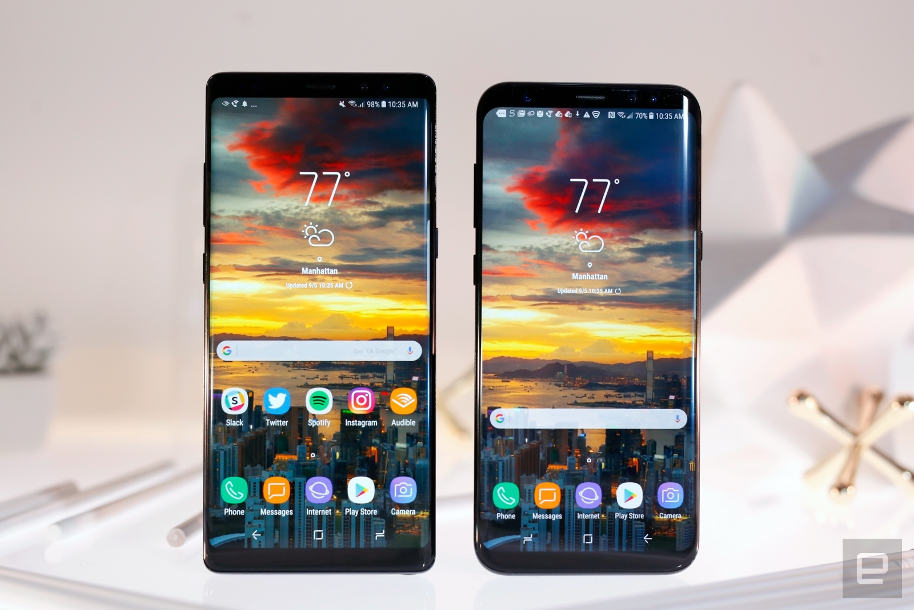
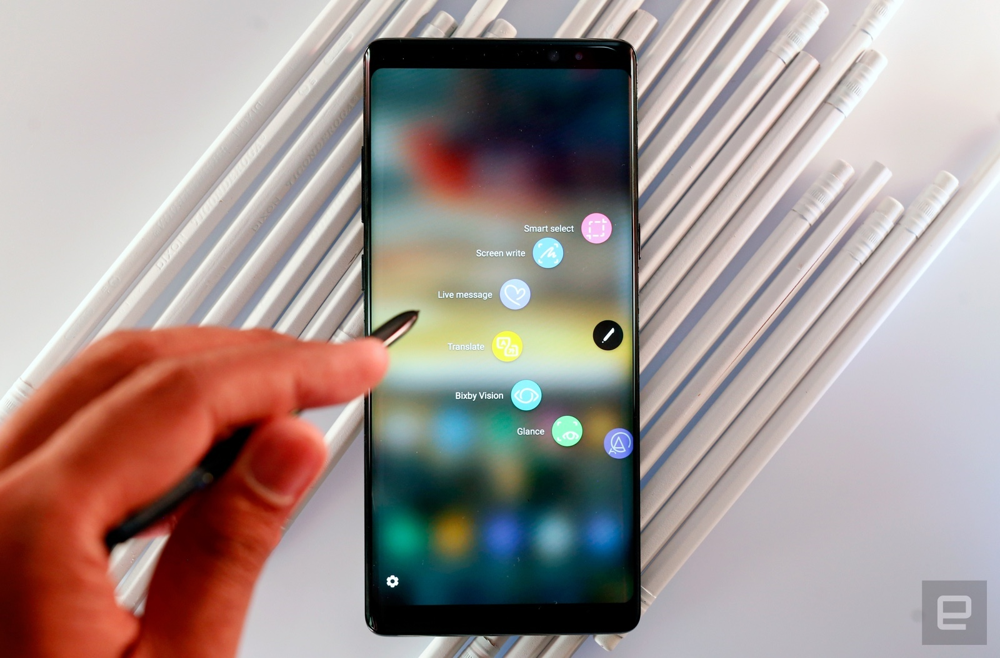

重点规格
硬件设计

Note 8 与先前所有机器相比，最大的差异就是屏幕改成了 18.5:9 的无边际屏幕，
虽说屏幕占比的部分小输给 S8+，但其实这 6.3 吋的屏幕无论在画面饱和度与亮度上也都是相当地好，
配合 HDR 显示的支持更是完全无愧有笔旗舰的称号。
Note 8 继承了很多来自 Note 7 与 S8 系列新机的规格，
包括 IP68 防水防尘（以搭载了 S Pen 的规格来讲），
还有除了放上了虹膜辨识外，亦支持了指纹辨识的规格 --
虽然是在机背啦，但比起苹果的 iPhone X 完全拿掉也算是有诚意了。

另一方面，Note 8 指纹辨识与镜头中间则是跟 S8 的排列不同，
改成了用 LED 闪灯隔开，也算是有尽量想办法避免手去摸到镜头的问题。
虽然好像不少人还是觉得应该要改到背壳中央，
整体的手感来讲，除了手机稍重之外，
个人觉得这个三星已经用了颇久的前后曲面玻璃的配置，
握起来是真的感觉很棒。不过一旦跟 S8+ 相比，
又会觉得 Note 8 的「大平头与方下巴」好像又有点太过方正不够圆滑，
真的单手操作起来会觉得有点卡卡的。

S Pen 的部分，大致上硬件规格就跟 Note 7 差不多
（4,096 阶与 0.7mm 笔头），但比起 Note 5 而言是很大的升级，
基本上还是很难与真正的书写相提并论，
但已经十分细腻。悬浮感应的功能还是 S Pen 很厉害之处，
而且这次还加入了手写动态贴图功能，一整个很能让别人知道你用的是 Note 新机。
不过要注意的是，这功能其实有限制一定的书写长度（会有计量条显示）。
屏幕
Note 8 采用 Super AMOLED 的无边际屏幕依然保持着相当吸睛亮眼的特色，
屏幕尺寸更是比 S8+ 还要更大，来到了 6.3 吋。整体机身除了增高外，
大致上就只有再增大了一些些而已，这都得归功于 18.5:9 屏幕加上双曲面屏幕的窄边框优势
，也是 Note 8 与前代甚至是其他竞争品牌的最大差异处。

这片分辨率最大可达 2,960 x 1,440 WQHD+ 的屏幕，
无论在文字图片或者是视频的观看上，都保持着相当锐利且细节丰富的表现。
移动 HDR 显示规格的支持更是让这块屏幕，
可以在支持的平台如 Netflix、Amazon
与 YouTube 等，拥有更强大的支持表现。
界面UI
Note 8 的界面跟 S8 / S8+ 几乎一模一样。
这个高度定制化的 Android 7.1.1 系统，其实要习惯还是需要一段时间。
首先是主页上下滑将可叫出应用抽屉，存取所有的应用。
接着，其实三星的「8」系列手机都是有着右键的附属菜单在 app 捷径之上的，
只需要长按 app 即会叫出解除安装或多选等选项。

除了左右曲面屏幕必备的 Edge UX 捷径功能外，
既然屏幕的顶端与底部都推到了更「边际」，
长久以来习惯使用搭载实体按键的三星手机的朋友还得要习惯的，
就是屏幕之上的虚拟系统按钮。
这个改变最大的好处是你终于可以更改这些按钮的顺序，
然后最左侧边缘也有着一颗很像灯号的按钮，
连点两下即可启动/关闭系统按钮列隐藏的功能，
将可让你在各 app 里更善用这片无边际屏幕的最大显示范围。
相信对于少了实体键的朋友应该也会有「那截图该怎么办」的问号，
这部分则是也与 S8 一样，变成了电源按钮 + 减音量的按钮，
不过反正原厂的那个手刀划过屏幕的截图方式也还是保留着啦 --
相信大部分人应该都还是会比较习惯用后者的方式吧。单手模式的话，
原厂的启用方式则是提供了连按三下 Home 键以及从左右侧的底部边角往对角滑出的方式来叫出。

这次 Note 8 所主打的双 App 组合功能，其实是源自平板系列的功能，
以快速存取来讲是相当方便。但说真的在手机上，
我还是比较喜欢用长按多任务钮来启用比较顺手快速。
此外，我们稍微挖了一下 Note 8 的功能表还看到了一个
「Dual Messenger」的功能，这功能其实就是应用双开，
不过是专门给即时通使用（讲是这样讲，Facebook app 其实也在支持行列中），
让你可以用不同的 app 登入多个帐号，双开的 app 图标右下角会有一个橘色的标示。
相机
这次 Note 8 的重头戏就是首度加入的 12MP 双主镜头规格，
更厉害的是广角 / 两倍镜两颗镜头都具备有 OIS 的规格
（不过后者就没有 Dual Pixel 对焦了）。当然，
模拟如同大感光元件单眼相机配上大光圈镜头的超浅景深拍摄功能，
自然也是这次的重头好戏了。要使用它只要按下拍摄界面中位于
X2 两倍变焦按钮一侧的「景深即时预览」，
即可开启可通过双镜头模拟浅景深拍摄的模式。

这个模式下系统将会提示需至少与被摄人或物距离 1.2m 以上距离，
然后只要条件满足了且完成对焦（可触控指定对焦位置，但不能控制曝光补偿），
画面便会显示可以使用这项功能的黄字提示。
此时拍摄一般照片会出现的曝光补偿杆，就会变成调整景深效果的拉杆。
调整到「满杆」就是最强的浅景深效果，最低则是完全关闭。
不过这个功能其实能够在后续看图的时候再行调整，所以不用太过在意。
而尽管可以重新调整景深程度，但注意的是，
相较于华为双主镜头那种还可以重新对焦的景深模拟功能，
Note 8 其实仅能调整景深效果而已。所以请特别要注意对焦必须十分正确，
否则就可能会让不希望糊掉的范围糊掉。
这种状况在对焦点之后的范围内，特别容易会因为景深模拟的关系而被虚化。
不过反正你也可以把景深清楚的范围调到最高，等同于没有模拟景深效果，
那么只要不是拍的太近或失焦的照片，通常而言应该可以得到一张前后景都清楚的照片啦。
电池续航
标配用上了 6GB RAM 的 Note 8，使用起来的确是有比同处理器但仅有 4GB RAM
的 S8+ 反应要快上一些。分数方面 S835 跟 E8895 版本看起来是各有长短，
小编实际使用后者是感觉不到什么延迟的问题，
大型游戏对于这样的旗舰机来讲也是很难难得倒他们，
而且即使长时间使用也没有明显感受到烫手的发热问题 --
温度主要是集中在背壳的 Logo 附近。

续航部分，相对与 S8+ 一样皆为 3,500mAh 电量的 Note 7，
在电池容量上趋于保守仅有 3,300mAh 的 Note 8，
其实功耗部分个人觉得控制得很好，也因此依然保持着相当不错的续航水准。
在我们标准的视频播放测试之中，
Exynos 8895 的版本大致上可以撑到 14:12 没问题（
S835 版本可以撑到 15:04）--
我们这里的测试用的是手机系统中的「高性能模式」，
实际上我们这次也花了时间做了更多次测试。
在将性能模式调成一般，再加上关闭 AOD 后 -- S8+
评测时我们发现关闭 Always-on Display（AOD）的话，
可以有效延长续航 。
总结
整体而言，虽然 Note 8 相较 S8 没有太多太突破性的创新，
但也已经是三星至今最佳的触控笔旗舰了 -- 真的有需要用到触控笔的人士，
除了它，大概也没太多选择了吧（Fan 版？）。S8 系列已经是当今最强的几款旗舰手机之一了，
Note 8 以此为基础再加上 S Pen 以及双主镜头的加持，
也难怪价位来到目前的新高点。必须讲，三星敢将价格抬高来迎战即将来到的苹果 iPhone X，
也真的算是颇勇敢的了，只是消费者是否捧场或价位是否会不会还有调整，也就只能观察日后的反应。

Note 8 也许称不上神机，就笔者评测期间自己使用上，
也认为自己不见得觉得真的让我很想要从 S8+ 升级。
但这在笔者眼中看来算是各种概念上的浴火重生的系列，
相信对于一直以来爱用三星有笔旗舰的朋友们而言，应该就是必定的升级选项了吧。
评论